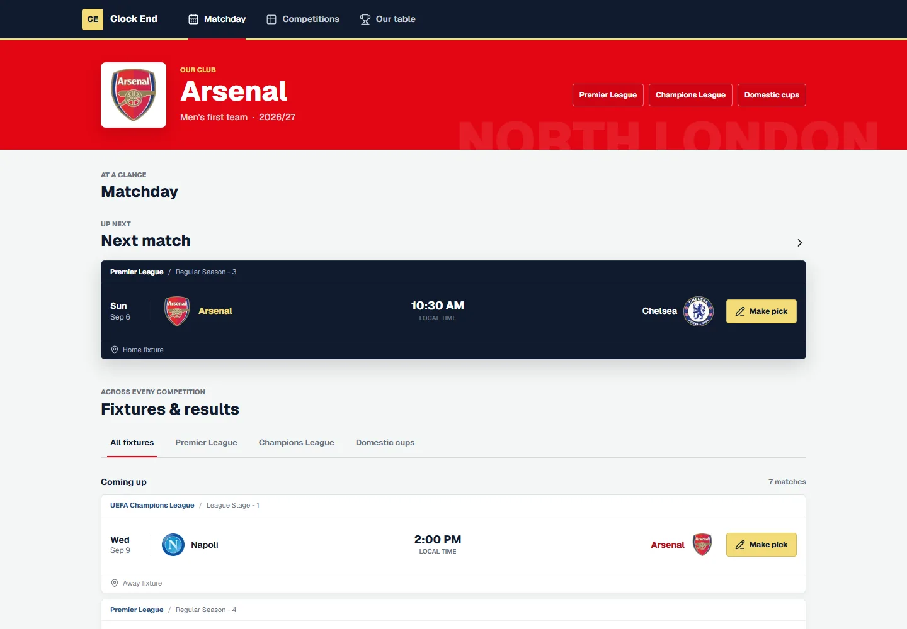
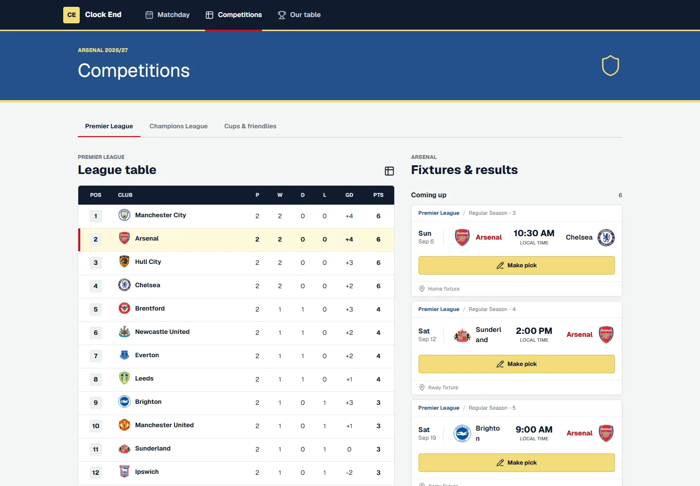
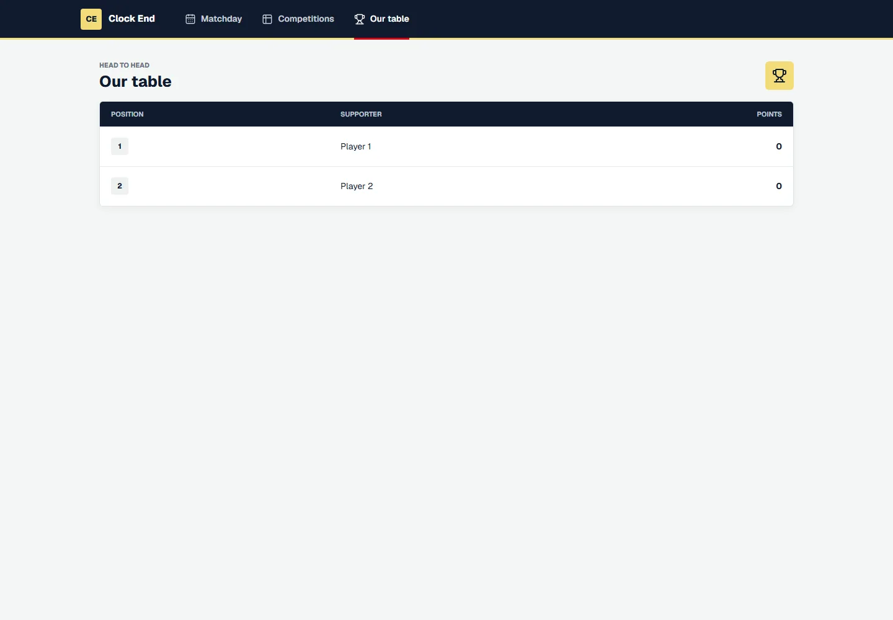
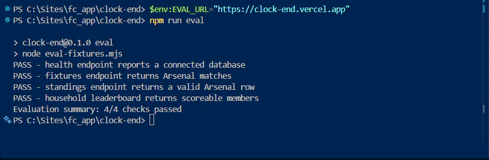

Live sports dashboard case study
Clock End
An Arsenal-focused football companion that brings fixtures, results, league context, and a household prediction competition into one fast, readable experience.

Product overview
Clock End began as a World Cup scorekeeper, but the first concept solved the wrong problem: it expected the user to enter goals instead of simply showing trustworthy scores. I used that mismatch as a product reset and rebuilt the project around how my husband and I actually follow Arsenal.
The new product follows one club across the Premier League, Champions League, and domestic cups, converts kickoff times for the viewer, and supports a friendly prediction table. That narrower audience made the requirements clearer and turned a generic sports exercise into a personal product we use.
User experience and data flow
The Next.js client requests internal API routes rather than exposing provider credentials. Those routes normalize Highlightly data, persist fixtures and predictions through Prisma, and return UI-focused types. Neon Postgres keeps the household league, prediction history, cached fixtures, match events, and quota state durable across deployments.
The interface uses an Arsenal-inspired red and navy foundation with pale bruised-banana and gold accents. The main dashboard prioritizes the next match; the competitions view pairs Arsenal fixtures with the full Premier League table and highlights the club's row for fast scanning.


Reliable data within a hard request limit
Highlightly allows 100 requests per day, so the browser never calls it directly. Each visit requests Clock End's internal endpoints, while 12-hour Vercel and database caches absorb normal traffic. A protected daily refresh warms fixtures and standings before visitors arrive. Live-score polling stays off except near an Arsenal kickoff, runs at five-minute intervals, and pauses whenever the tab is hidden.
Production logs uncovered a concurrency bug in my own quota guard: the first home and away fixture requests of a new UTC day could race to create the same quota row, causing one request to fail even though allowance remained. I replaced that read-then-update sequence with one atomic PostgreSQL reservation. I also added a stale-data fallback, so a temporary provider failure serves the last durable fixture snapshot instead of an empty dashboard.
AI-assisted build workflow
I used Codex as an active engineering collaborator throughout the rebuild: recovering context after editor interruptions, inspecting the existing React code, comparing data providers, implementing bounded changes, and running verification after each phase.
I retained responsibility for the product decisions and review. That included correcting the original scorekeeper misunderstanding, defining the 100-request constraint, rejecting unnecessary live polling, choosing the deployment architecture, and checking the finished behavior against the fan workflow.
Release checks and validation
I wrote a custom deployment evaluator for the application's critical contracts. It verifies database health, requires the fixture feed to contain Arsenal matches, validates Arsenal's row in a full league table, and checks that the household leaderboard returns scoreable members.
The checks run sequentially to avoid an API burst, skip the live-score endpoint, enforce a request timeout, and return a nonzero exit code when any contract fails. This is an application regression harness rather than an LLM-quality eval; keeping that distinction explicit makes the evidence more useful.

Outcome
A useful matchday dashboard that became part of a real fan routine.
The live app now returns current Arsenal fixtures and results, shows the Premier League table with Arsenal highlighted, and persists a two-person prediction league that can grow to more members. It also demonstrates the less visible production work behind a small product: server-only secrets, quota telemetry, caching, migrations, managed Postgres, automated deployment, and contract-level release checks.
Continue exploring